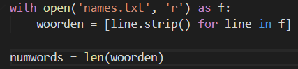
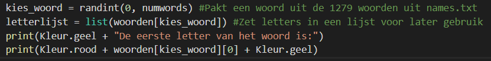

Als eerst hebben we een stukje code geschreven dat van een lijst met woorden automatisch een Python List maakt. Dit was nog best wel lastig (ook al ziet het er niet zo uit). In deze fase hebben we ook kleuren geimporteerd. Dit hebben we gedaan met 'import os'. Daarna hebben we een class gemaakt en die 'kleuren' genoemd. Nu kunnen we makkelijk de tekst van kleur veranderen.
In deze fase hebben we de code gescreven die de naam van de gebruiker vraagt en de uitleg geeft. Dit was niet erg moeilijk want we hebben dit namelijk al vaak gedaan.
Als eerst maken we een variabele die een willekeurig woord uit de woordenlijst kiest.
Ook maken we een variabele die de letters in een lijst zet voor later gebruik.
Daarna krijgt de gebruiker de eerste letter van het woord te zien.
Nu moet hij het woord proberen te raden.
Het programma checkt daarna met behulp van de 'if' statement of de gebruiker het woord goed heeft geraden of niet.
Als de gebruiker het woord goed heeft geraden dan print het programma het woord letter voor letter onder elkaar.
Daarna stopt het prgramma.
Als de gebruiker het fout heeft geeft het programma aan welke letters hij goed heeft en op welke plek die moeten staan.
Dit doet het programma door alle letters uit de gok van de gebruiker te halen en die in een lijst te zetten.
Daarna vergelijkt hij die lijst met een andere lijst waar alle goede letters van het woord in staan.
Als dat allemaal gedaan is herhaalt het programma dat 4 keer en stopt daarna. Het programma stopt ook als de gebruiker het woord heeft geraden.